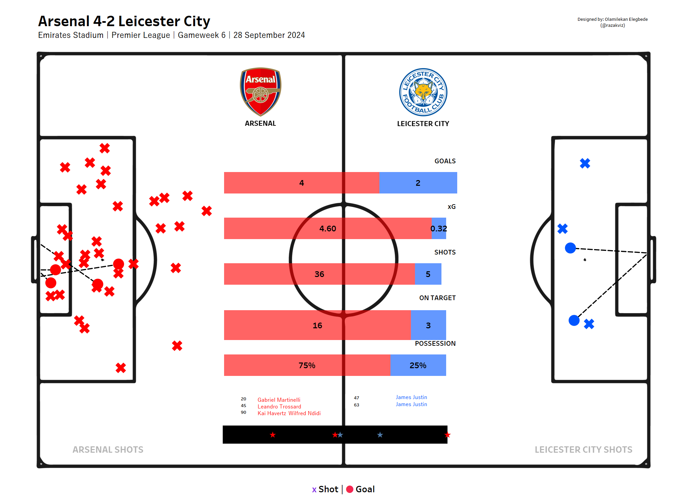

Combined Game Shotmap
A side-by-side shot visualisation for both teams in a match — showing every shot taken, coloured by outcome and sized by xG, to reveal shooting accuracy, chance quality, and attacking effectiveness.

Overview
A shotmap is one of the most effective tools in football analytics for quickly understanding how a match played out from an attacking perspective. By plotting every shot's location, outcome, and xG value in a single view, analysts and fans get an instant read on which team created better chances and how efficiently they converted them.
This project generates a combined shotmap for both teams in any selected match, using Statsbomb event data and Python visualisation libraries to produce a clean, shareable graphic.
What the Viz Shows
- Shot Locations: Every shot is plotted at its exact coordinates on the pitch — immediately revealing whether a team was shooting from high-quality central positions or speculative long-range efforts.
- Outcomes: Shots are colour-coded by outcome (goal, saved, blocked, off target) giving an instant read on conversion rates and goalkeeper distribution across the match.
- xG Values: Bubble size corresponds to expected goals value — making it visually obvious which chances were the highest quality and whether teams are creating or converting above expectation.
Technical Implementation
Shot Data Extraction
All shot events for both teams are extracted from the Statsbomb match data, including location, outcome, xG value, player name, and minute of the match.
Python Visualisation
mplsoccer is used to render both team's shots on a shared pitch canvas. Matplotlib handles colour mapping by outcome and bubble scaling by xG.
Tableau Version
An interactive Tableau version allows users to filter by team, outcome, and match period — enabling more detailed exploration of the shot data beyond the static Python output.
Explore the Project
Watch the walkthrough on YouTube or browse the full code on GitHub.